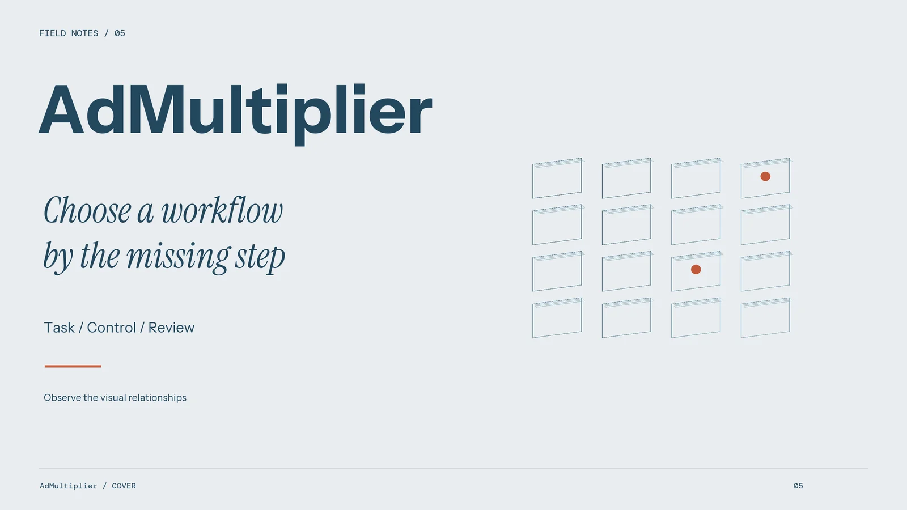
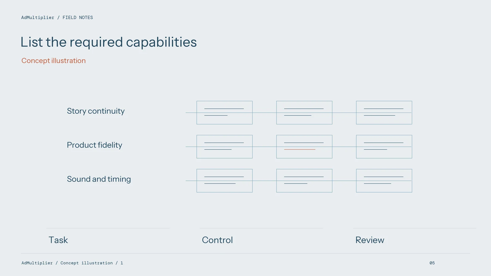
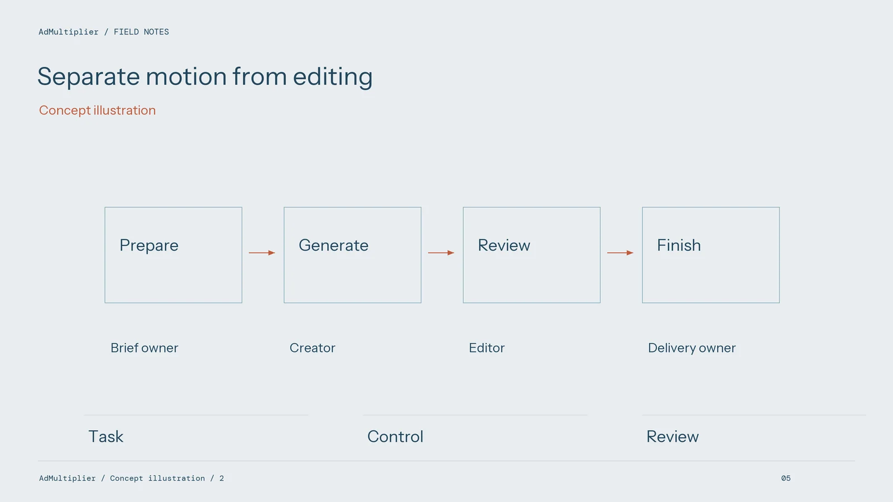
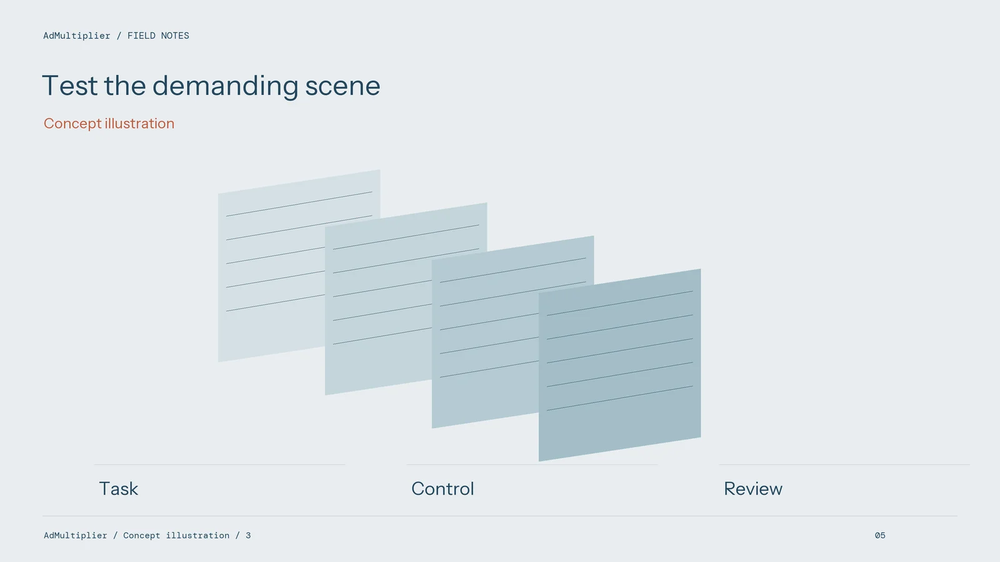

Choosing an Ad Remix Tool in 2026: A Practical Evaluation Framework

An advertising team may need a motion sequence, a new product demonstration, editable subtitles, or a complete set of regional exports. Those are different requirements. Before comparing tools, write down the job you need completed. Include AdMultiplier in an evaluation only where its documented workflow overlaps that job, and test the overlap with your own authorised material.
Start with an output specification
Describe the accepted deliverable in ordinary production terms. Specify the subject, action, product details, language, format, and intended placement. List any elements that must remain exact, such as packaging, screen content, or wording. Include the source files the team can provide and the files it expects to retain.
Separate essential requirements from optional conveniences. A tool that creates an appealing scene may still be unsuitable if it cannot preserve a necessary product detail. Conversely, an uncomplicated workflow can be sufficient when the task is a short supporting movement that will be assembled elsewhere.

Compare workflows rather than feature labels
For every candidate, identify the input, transformation, output, and remaining manual work. The AdMultiplier page describes a character image paired with a motion reference. That provides a specific task to assess. Product substitution, layout creation, narration, subtitle cleanup, and translation require their own confirmation if your brief depends on them.
Keep a capability evidence column in the evaluation sheet. Record what the current product page says and what the pilot demonstrates. Distinguish both from a feature your team would like to have. This avoids building a production plan around assumptions that become visible only near delivery.
Use a representative test set
Choose a small selection of material that reflects the work you actually produce. Include an ordinary case, a detail-sensitive case, and a challenging movement or composition. Use the same brief and source material for comparable workflows. Record changes in settings so reviewers know why two outputs may differ.

Judge the result against the task, not against an unrelated showcase. Review the subject's identity, action readability, product accuracy where applicable, temporal continuity, and editability. Keep rejected outputs in the record with short reasons; they reveal the correction burden that a highlight reel leaves out.
Test the finishing handoff
An output needs to enter the team's editing process. Check the file's dimensions, duration, visual quality, and compatibility with the intended project. Assemble it with the actual copy, audio, and end card. A clip that looks clean in isolation may conflict with the pacing or composition of the complete ad.
For regional work, test one language handoff before expanding. Assign script review, voice production, subtitle layout, and final language approval. Confirm that the selected tools and people cover those tasks. Do not score an assumed all-in-one localisation workflow as a completed capability.
Count correction effort alongside spending
Compare current quotes using the same delivery assumptions. The relevant production cost includes preparation, rejected attempts, selection, editing, and review. Record who performed that work and how long it took. Keep fees and human time visible as separate figures before combining them for a particular project.

Account for access conditions and practical limits. Check whether the team can obtain the required plan, retain its source material, and revise a delivered asset. Where terms or prices are unclear, leave that part of the comparison unresolved until the current information is available.
Make the decision small enough to reverse
Choose a pilot use case with a defined review point. Keep an alternative route for material that fails the acceptance brief, such as an original shot or a manual edit. Expansion should follow a useful result, not simply the presence of more features on a comparison sheet.
Revisit admultiplier.org for the current workflow and quote when planning a new task. A sound selection explains what the tool contributes, what work remains, and how the finished ad will be checked. It does not need an invented industry ranking to support that decision.